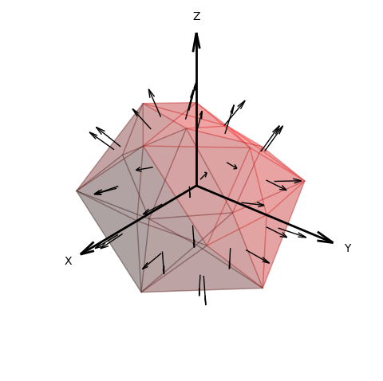
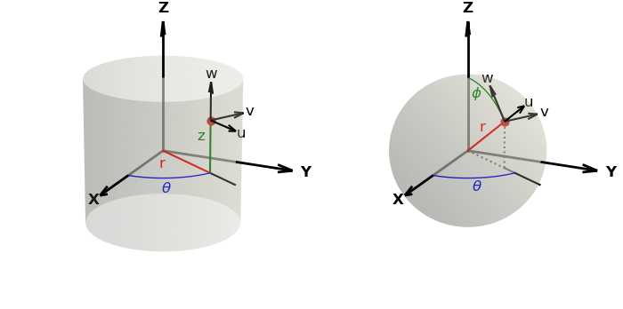
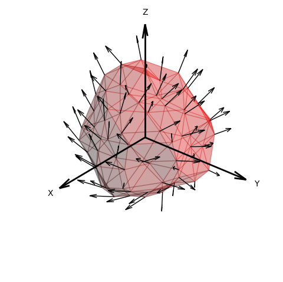
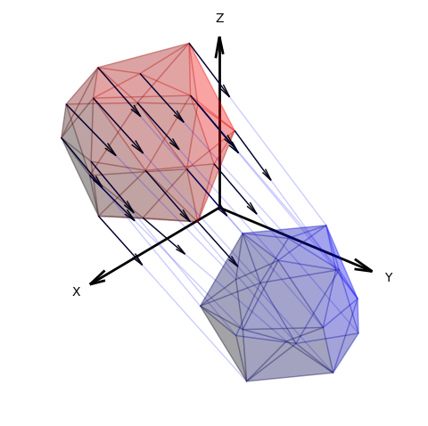
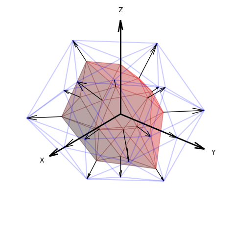

Vector Fields¶
Vector fields in 3D can be constructed using four surface object methods based on the coordinates of the surface object. These methods provide:
- Face normals
- Vectors at a position, ( u, v, w )
- Surface displacements, (δx, δy, δy)
- Surface to surface positional differences, (δx, δy, δy)
The methods return a vector field object of type Vector3DCollection. All methods have the named parameter:
| named parameter | type | default value |
|---|---|---|
| scale | numeric | 1 |
| width | numeric | surface linewidth |
| alr | numeric | 0.25 |
| color | Matplotlib color | ‘black’ |
The scale argument is a multiplier for the length. The width argument controls the line thickness with the default being the surface linewidth named argument of the constructor (same as the edge linewidths). The alr argument is the ratio of the arrowhead length to arrow length.
Since the Vector3DCollection is derived from the Line3Dcollection, the vectorfield object is added to a 3D axis in the identical way a surface is added to the axis, e.g.:
axis.add_collection3D(vectorfield)
In the following discussion, the named parameters in the method description are omitted for clarity to highlight the main controlling arguments. The surface method returns a vector field object labeled vf.
Face Normals¶
The method is:
vf = surface.facenormals()
The length of the vectors are proportional to the average size of the triangular faces. As the surface rez increases, the length decreases. The length of the vector can also be set by assigning the ‘scale’ method argument. The vectors are centered at each triangular face, normal to the face, as illustrated below.
An example of this vector field is given in Face Normals Vector Field.
Vectors at a Coordinate¶
The method is:
vf = surface.vectorfield_from_op( op, returnxyz=False )
The op argument is a function which takes a 3N array argument in the native coordinate system. The function returns the 3N array for the vector in u,v,w coordinates, aligned using the native coordinates at each coordinate, as shown below for the cylindrical and spherical coordinates.
The uvw axis are aligned with the axis for the planar coordinate system. For the polar coordinates, the uvw axis are similar to the cylindrical coordinates. If the returnxyz argument is True, uvw are in planar coordinates. The vectors are located at each surface vertex, as illustrated in the figure below.
An example of this vector field is given in Vector Field in Cylindrical Coordinates.
Surface to Surface¶
The method is:
vf = surface.vectorfield_to_surface( surf )
The surf argument is a surface object which is the same type and rez as the calling surface object. The vector at each vertex of the surface object points to the corresponding vertex in the surf argument object, as shown below.
Surface Displacements¶
The method is:
vf = surface.dispfield_from_op( op, returnxyz=False, ussbase=False )
The op argument is a function which takes a 3N array argument in the native coordinate system. The function returns the 3N array for the vector in native coordinates. If the returnxyz argument is True, uvw are in xyz coordinates.
This method is similar to the geometric mapping using a function as:
surface.map_geom_from_op( op )
This difference is that instead of transforming the surface shape using the map function, vectors indicate how each surface vertex will be mapped for the function without modifying the surface geometry. This is illustrated above using the blue edges for the ‘mapped’ surface.
This function is equivalent to the vectorfield_to_surface method if a transition surface is created as:
import copy
'''
code here
'''
surf = copy.copy(surface)
surf.map_geom_from_op( op )
vf = surface.vectorfield_to_surface( surf )